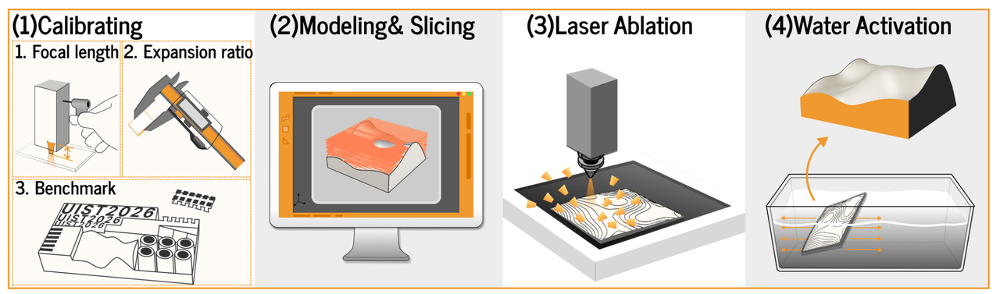
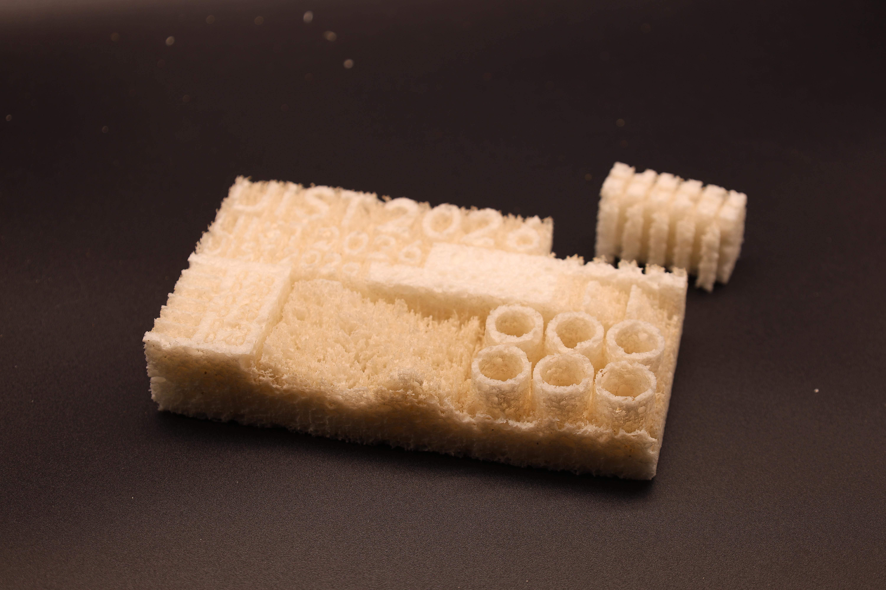

Mechanism and Fabrication
The Mechanism and Fabrication section explains the principles and processes behind LaserMorph. It is divided into four main parts: First, it describes how the system works, including the workflow, mechanism, and advantages. Then, it covers the preparation of materials, the environment, and the necessary equipment. The section continues with a detailed fabrication process, including pre-processing, calibration, laser cutting, and activation. Finally, it discusses key laser parameters and provides tips for successful fabrication, along with application examples. Each part provides a clear step-by-step guide to understanding and implementing LaserMorph.

Understand How It Works
The Understand How It Works section is organized into three key parts: Workflow, Mechanism, and Advantages. The Workflow section explains the step-by-step process of how LaserMorph operates. The Mechanism part dives into the technical principles behind the transformation from 2D to 3D forms using laser processing. Finally, the Advantages section highlights the benefits of using this method, such as its efficiency and the ability to create complex 3D shapes without the need for intricate models or molds.
Workflow

LaserMorph establishes a closed-loop end-to-end computational manufacturing workflow, which involves four key steps: hardware and material calibration, importing or designing the model, laser engraving, and water activation. Each of these steps plays a critical role in ensuring precision, consistency, and efficient transformation of 2D to 3D forms.
- Hardware and Material Calibration
The first step involves calibrating the hardware and materials to ensure consistency across different power platforms. Users calibrate the system by processing standardized calibration pieces using a defined calibration procedure. This ensures that the parameters remain consistent, allowing for reliable results when transitioning between various laser platforms with different power settings. - Importing or Designing the Model
In this step, users can either import existing models or design new ones using a parametric design tool integrated into the Rhino/Grasshopper environment. The tool provides real-time 3D physical simulations, enabling users to visualize the final shape before fabrication. Additionally, it offers targeted material selection guidance, helping users choose the best material for their design. This step ensures that the design is optimized for the laser engraving process and allows for adjustments based on simulation feedback. - Laser Engraving
Once the model is ready, the complex 2.5D height field is converted into laser energy paths. These paths are precisely followed during the engraving process, where a single-pass engraving technique is used to etch the designed geometry into the material. This step is crucial for encoding the geometric potential into the material, preparing it for the final 3D shape transformation. - Water Activation
The final step in the process is water activation, where moisture triggers the release of the material's "latent volume." In just a few seconds, the material undergoes a dramatic transformation, transitioning from a flat, 2D form into a dynamic 3D shape. This activation step enables LaserMorph to achieve rapid volumetric changes without the need for complex machinery or multi-step assembly, making the process quick and efficient.
Mechanism

LaserMorph works by utilizing precise control of laser paths and ablation depth to transform flat 2D designs into 3D volumetric shapes. The process begins by adjusting the laser's speed and power to accurately etch the depth and width of the sponge material. These adjustments allow for pre-volume editing while the material remains unexpanded. By controlling the laser paths, LaserMorph ensures that the material will expand into the desired 3D form after absorbing water, effectively triggering the pre-designed transformation.
At the core of LaserMorph is its ability to leverage the high throughput processing capacity of standard laser cutting platforms. This allows design instructions to be quickly encoded into the material within a very short processing time. Unlike traditional methods that might involve complex multi-step processes, LaserMorph can directly transition from a 2D design to a full 3D shape, enabling a much faster and more efficient production process.
Laser engraving in LaserMorph is more than just the creation of simple 2D patterns; it involves precise path control that allows the creation of complex 3D geometries with continuous curvatures. This includes generating surfaces with positive and negative Gaussian curvatures, which are typically difficult to achieve with traditional 2D manufacturing methods. Through precise laser path adjustments, LaserMorph can generate these complex shapes while maintaining consistent depth and structure.
Another important aspect of the mechanism is the interaction between the laser-engraved material and water. Once the material is laser-engraved, it enters a phase where it is activated by water, which causes the material to expand and release its "latent volume." This rapid volumetric change is what enables LaserMorph to create dynamic 3D shapes from flat 2D forms. The process is extremely quick, taking only a few seconds to transform the material into its final shape.

In addition, LaserMorph enables reversible transformations. After the material has been activated and transformed into its 3D shape, it can be dried, compressed again, and reactivated multiple times. This ability to repeat the process without the need for new material allows for sustainability and reduces material waste, which is a crucial part of the mechanism.
The entire system relies on the precision of laser cutting to encode the geometric design into the material, followed by the water activation to trigger the 3D transformation. This method eliminates the need for complex molds, multi-step assembly, or additive manufacturing, offering a streamlined and efficient alternative for 3D fabrication.
Advantages
LaserMorph introduces a novel approach to transforming 2D designs into 3D forms through mold-free, water-activated transformation. By leveraging standard laser cutting platforms, LaserMorph enables rapid fabrication of complex 3D geometries directly from flat 2D sheets. The following are some of its key advantages:
- No Molds Required
LaserMorph does not require molds or complex assembly steps. It simplifies the manufacturing process by directly encoding 2D designs into 3D forms through laser engraving, without the need for additional tools or molds. - Water Activation
The use of water to trigger the transformation is a unique feature of LaserMorph. The material undergoes a rapid volumetric change when activated by water, allowing for quick and dynamic shape-shifting from flat to 3D in a matter of seconds. - Reusability
Unlike many other methods, LaserMorph materials can be reactivated multiple times. After drying, the material can be compressed and then reactivated, allowing for repeated use without consuming new material, supporting sustainability and reducing waste. - Low-Cost and Efficient
The process is cost-effective, leveraging the high throughput capabilities of standard laser cutting tools. This method avoids the need for expensive machinery, molds, or multi-step assembly, making it more accessible and affordable for rapid prototyping and small-scale production. - Compressible for Transport
The final 3D objects created with LaserMorph can be compressed back into their flat, 2D form after use. This feature makes the material easy to store and transport, reducing logistics costs and space requirements.
In summary, LaserMorph presents an alternative approach for creating reconfigurable 3D objects, eliminating the need for molds, reducing time and costs, and enabling sustainable and efficient fabrication.
Material Preparation
This section introduces two key aspects: Material and Equipment. The compressed cellulose sponge is available in various thicknesses, and standard laser cutting platforms are used for engraving the material before the activation process.
Material
Compressed cellulose sponge is the core material used in LaserMorph. It is primarily composed of cellulose, a natural polymer derived from plant fibers, making it biodegradable and environmentally friendly. The material comes in various thicknesses (1mm, 1.5mm, 2mm, 3mm, 6mm, and 10mm) to accommodate different project scales.
Upon hydration, the compressed sponge undergoes significant vertical expansion—approximately 10×—transforming from a flat sheet into a volumetric form. After drying, the material can be thermally recompressed (120°C) and reactivated for repeated use. The key feature of LaserMorph is that laser patterning encodes 3D geometry into the planar substrate, and water activation releases the pre-defined volumetric form.
Equipment
LaserMorph uses standard laser cutting hardware for planar processing. The method works across different laser platforms—from consumer-grade CO₂ laser cutters to low-cost diode-based systems. Since fabrication results vary across platforms and sponge thicknesses, users first fabricate a standardized calibration sample to identify appropriate processing parameters for their specific setup.
Fabrication
The LaserMorph manufacturing process involves several essential steps: pre-processing preparation, calibration, laser cutting, and activation. Each step is critical for achieving the precise transformation of 2D designs into 3D shapes. Below is a detailed breakdown of each step.
Pre-processing Preparation
Before laser cutting, ensure the compressed cellulose sponge is flat, dry, and securely placed on the laser bed. Material thickness should be consistent across the working area.
Calibration
For the original 20 W setup, use the Laser Calibration tool to explore measured groove depths after hydration and interpolate between supported power and speed settings. Other materials, machines and processing conditions require their own calibration.

Since fabrication results vary across laser platforms and sponge thicknesses, users first fabricate a standardized calibration sample to identify appropriate processing parameters for their setup. The calibration process includes:
- Parameter Testing: Test different combinations of power (%), speed (mm/min), and line spacing to find stable processing parameters. Laser power and scan speed determine etching depth—the relationship is monotonic: depth increases with power and decreases with speed.
- Standard Test Sample: A calibration card integrates multiple test modules including minimum text (0.75-1.0cm readable), tactile textures, mortise-and-tenon joints, minimum wall thickness (≥0.8mm safe threshold), slope gradients, and complex curvature. This allows users to verify multiple parameters in one processing cycle.
Based on calibration results, the system generates a parameter table mapping target depths (e.g., 0.15mm, 0.20mm, 0.25mm, etc.) to appropriate power and speed settings.
Laser Cutting
The laser cutter engraves the material based on design paths, encoding geometric information that triggers 3D transformation during activation. The design tool converts geometric intent into toolpaths, assigning different depths through calibrated power and speed parameters. Output files include DXF path files and G-code for machine execution.
Activation
Activation triggers the transformation from planar to volumetric form through material state transitions:
- Hydration (Latent → Activated): Immersion in water triggers rapid out-of-plane expansion, approximately 10× in the vertical direction. The material becomes soft and compliant, revealing the encoded 3D geometry.
- Sealing (Activated → Maintained): Applying a physical barrier (e.g., plastic film or paraffin) slows evaporation and prolongs the compliant state for extended tangible interaction.
- Dehydration (Activated → Locked): As moisture evaporates naturally or through forced air, the cellulose fibers re-link and the material hardens. The expanded geometry stabilizes into a rigid, self-supporting structure.
- Compression (Locked → Latent): Heating (120°C) and pressing flattens the dried object into a compact planar state, enabling storage, transport, and subsequent reactivation across repeated cycles.